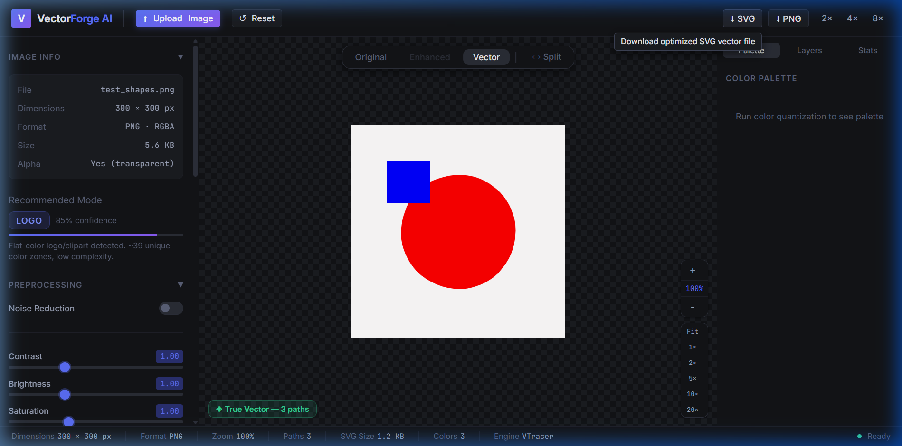
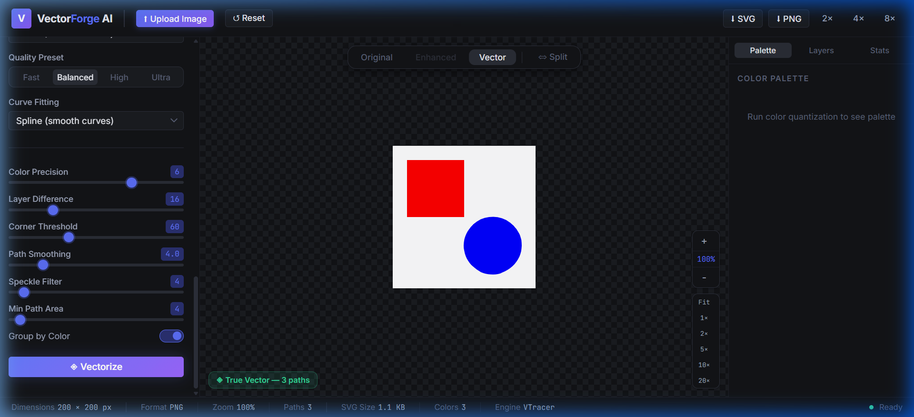

VectorForge AI — Master Documentation
Production-grade, 100% local-first raster-to-vector web application. Converts blurry logos, icons, illustrations, and line art into crisp, infinitely scalable Bézier curve SVG paths without cloud services or subscriptions.
⚡ Core Philosophy
Online vectorization platforms (such as Vectorizer.io) impose severe paywalls, daily credit caps, and send proprietary or sensitive user artwork to remote cloud servers.
VectorForge AI was architected from the ground up as a zero-telemetry, offline-first alternative for Windows. It provides professional graphic design capabilities:
- Zero API Keys or Subscriptions: Operates entirely on your local CPU/GPU hardware.
- Infinite Scalability: Emits pure
<path>and<polygon>vectors with standardviewBoxtags that stay razor-sharp at 2000% zoom. - Smart Preprocessing: Automatically removes artifacts from blurry JPEGs, balances contrast with CLAHE, and isolates color layers via K-Means quantization.
📐 System Architecture
The application is decoupled into a high-performance Python FastAPI backend and a reactive React 19 frontend studio:
File Structure Map
backend/app/main.py— FastAPI entry point, lifespan manager, and CORS rules.backend/app/image_processing/— Analysis, preprocessor, and quantizer pipelines.backend/app/vectorization/— VTracer engine, Contour engine, and dynamic selector.backend/app/export/— Scour SVG optimization andresvg-pyPNG renderer.frontend/src/store/appStore.ts— Zustand state management with mobile tab switching.frontend/src/components/— TopBar, LeftPanel, PreviewCanvas, RightPanel, StatusBar.
⚖️ Comparison: VectorForge AI vs. Cloud Converters
| Capability | VectorForge AI ⚡ | Vectorizer.io & Cloud Tools ☁️ |
|---|---|---|
| Cost & Licensing | 100% Free & Open Source (MIT) | Monthly subscription or per-credit fee |
| Data Privacy | 100% Local-First (0 bytes leave device) | Images uploaded to remote servers |
| Offline Support | ✅ Fully works offline on Windows | ❌ Requires continuous high-speed internet |
| Vector Engine | ✅ Rust VTracer (Smooth Bézier Splines) | Proprietary cloud engine |
| Deep Zoom Studio | ✅ Up to 2000% with split slider | Fixed or limited browser zoom |
| Color Palette Control | ✅ K-Means & Median-Cut (2 to 64 colors) | Automated without custom clustering |
| High-Res PNG Upscaling | ✅ 1×, 2×, 4×, 8× via Rust resvg |
Often 1× only or extra charge |
⚙️ Dual Vector Engines
To balance speed with aesthetic curve fitting, VectorForge AI employs two complementary vectorization engines:
| Engine | Underlying Technology | Ideal Target Artwork | Key Strengths |
|---|---|---|---|
| VTracer Engine | Rust compiled library with Python PyO3 bindings | Multi-color logos, illustrations, stickers, photos | High-order Bézier curves, no staircasing, stacked/cutout hierarchy |
| Contour Engine | OpenCV findContours + approxPolyDP |
Black & white line drawings, stamps, technical blueprints | Ultra-fast processing (<100ms), pure polygon simplification |
vtracer.convert_image_to_svg_py MUST be called with positional arguments in exact sequence to avoid PyO3 tuple parsing panics.
🧠 Intelligent Image Pre-Analysis
When an image is uploaded, app/image_processing/analyzer.py computes its edge complexity, color variance, and alpha transparency to recommend the optimal tracing mode:
LOGO— Clean, flat color regions with high edge continuity. Defaults to spline smoothing.ILLUSTRATION— Layered multi-tone graphic. Balances color precision with noise filtering.SKETCH— High-frequency line contours. Triggers adaptive contrast thresholding.BW— Binary black and white artwork. Routed directly to Contour engine for maximum sharpness.PHOTO— Continuous gradients. Uses K-Means quantization to group tones before tracing.
🎛️ Preprocessing & Color Quantization Suite
Transform noisy, blurry low-resolution rasters into clean inputs ready for vectorization:
| Module | Parameter Range | Functionality |
|---|---|---|
| Noise Reduction | Strength: 1.0 – 20.0 | Bilateral filter removes JPEG compression noise while preserving hard edges |
| Contrast (CLAHE) | Value: 0.1 – 3.0 | Adaptive histogram equalization clarifies faint artwork details |
| Sharpening | Strength: 0.0 – 2.0 | Unsharp masking enhances blurry boundary pixels |
| Background Removal | Tolerance: 0 – 100 | Flood-fills corner color with tolerance to isolate subject on transparent canvas |
| Color Quantization | Colors: 2 – 64 | K-Means clusters pixel colors and generates palette with area coverage percentages |
🔬 Deep Zoom Studio & Split View Comparison
The center canvas allows inspection at extreme zoom levels to verify that vector paths maintain razor-sharp clarity without rasterization artifacts.
- 2000% Deep Zoom: Smooth mouse wheel scaling from 5% to 2000% with centered focal zoom.
- Infinite Pan: Click-drag canvas panning with trackpad gesture support.
- Interactive Split Slider: Real-time split bar comparing original raster on the left with vectorized SVG on the right.
- Layer Visibility Toggles: Show or hide individual color layers in the right-side panel to isolate paths.


📱 Responsive Mobile & Tablet Studio
In version 1.0.1, VectorForge AI received a complete responsive overhaul ensuring zero horizontal overflow or squished previews on small screens:
| Viewport Breakpoint | Device Tier | Layout Behavior |
|---|---|---|
> 1080px |
Desktop / Wide Monitors | Full 3-column studio layout (280px left / flex:1 canvas / 260px right) |
821px – 1080px |
Laptops / Tablets Landscape | Compressed sidebars (245px / 225px) granting 350px–610px to canvas |
<= 820px |
Tablets & Large Phones | Segmented tabs (🎛 Controls, 👁 Canvas, 🎨 Layers) with 100% width active view |
<= 640px |
Phones Portrait | Compact TopBar (48px), hides PNG scale multipliers, clean status bar |
top: calc(100% + 8px); bottom: auto;) so they are never clipped or hidden above the browser window.
💻 Installation & Setup Guide
1. Clone Repository
2. Set Up Python Backend (Port 8000)
3. Set Up React Frontend Studio (Port 5173)
📡 REST API Reference
| Method | Endpoint | Payload / Query | Response |
|---|---|---|---|
GET |
/health |
None | {"status":"ok","version":"1.0.0"} |
POST |
/api/upload |
Multipart file |
ImageInfo (session_id, dimensions, preview_url) |
POST |
/api/analyze |
{"session_id": "..."} |
AnalysisResult (mode, confidence, notes) |
POST |
/api/preprocess |
PreprocessRequest |
PreprocessResponse (preview_url) |
POST |
/api/quantize |
QuantizeRequest (num_colors) |
QuantizeResponse (palette, preview_url) |
POST |
/api/vectorize |
VectorizeRequest (preset, mode) |
VectorizeResult (svg_url, stats, layers) |
POST |
/api/export/svg |
{"session_id":"...", "optimize":true} |
SVG binary blob (image/svg+xml) |
POST |
/api/export/png |
{"session_id":"...", "scale":2} |
PNG binary blob (image/png) |
🧪 Testing & Quality Assurance
VectorForge AI includes automated test suites covering all computer-vision filters, vector algorithms, and API routes:
🗺️ Future Roadmap & Upcoming Enhancements
| Feature | Status | Description |
|---|---|---|
| Batch Processing Mode | Planned | Queue 20+ images simultaneously for background conversion with bulk ZIP export |
| Standalone Windows Desktop .EXE | Planned | Single-click installer packaged via Tauri (Rust) without requiring Python or Node |
| Direct EPS & PDF Vector Export | Planned | Export vector paths directly to Adobe Illustrator (.eps) and print-ready PDF |
| AI Deep-Learning Line Repair | Research | Lightweight ONNX model to automatically reconnect fragmented sketch lines |
| Client-Side WebAssembly (WASM) | Research | Compile VTracer to WASM for completely serverless execution inside static web pages |